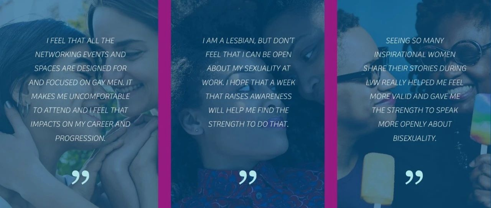

国际女同性恋现身日｜除了“消失”的女婴，还有“消失”的拉拉
提到“同性恋”，好像我们总是默认在讨论“男同性恋”？👩❤️👩
👩❤️💋👩女同性情侣好像总是被“她俩是‘好闺蜜’ 叭”的看待？
为什么同志平权运动中似乎缺乏女性同志的声浪？👭
这些与那些的这许多问题，其实都与“女同性恋隐身现象”有关，这是一个女性权益与同志权益的交叉议题。
女同性恋者面临着双重边缘化的困境。她们既要应对来自社会、家庭对同性恋的偏见和歧视，又要突破传统性别观念、父权制对女性的束缚。这种交叉性使得她们的权益争取更加复杂而艰难。
性少数群体的权益一直是社会关注的焦点之一，而女同性恋者作为其中一部分，她们所面临的困境也不容忽视。女同性恋者们在社会中常常面临着诸多挑战和忽视，她们的声音和存在也往往被边缘化。
据《中国性少数群体家庭暴力研究报告》显示，有约68.97%的受访女同性恋、双性恋曾遭遇过家暴，其中遭遇过来自同性伴侣暴力的人数达52.78%，遭受原生家庭暴力的达41%，女性仍是主要受暴群体。
“原生家庭暴力和亲密关系暴力是性少数人群最常遭受两种家庭暴力，性少数人群遭受家暴的特殊性在于性别表达、性别选择和性倾向导致的暴力。“《报告》工作人员表示。“出柜是导致原生家庭暴力的重要因素。有求助者在告知父母出柜后，被关在家里半个月，拿重物打脑袋，把头往墙上撞…相比其他人群，控制人身自由是原生家庭暴力中比较特有的形式，精神暴力最为常见。因为施暴方就是父母，及时报警求助也不能得到有效解决。”
参考资料：中国性少数群体生存状况报告、百度知道、国际女同性恋现身日